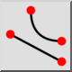

Кінець
Панель інструментів / Піктограма:


Меню: Прив'язка > Кінець
Шорткод: S, E
Команди: snapend | se
Панель інструментів / Піктограма:


Прив'язується до кінцевих точок ліній, дуг, сегментів полілінії, сплайнів, дуг еліпса та до точок.